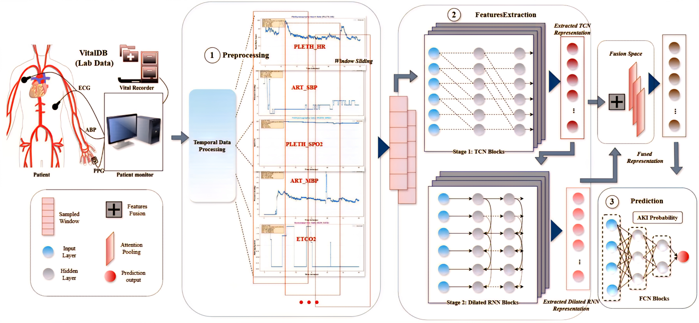
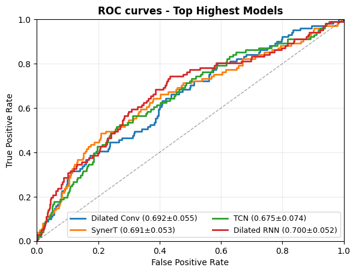
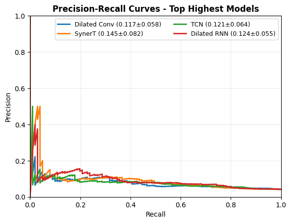
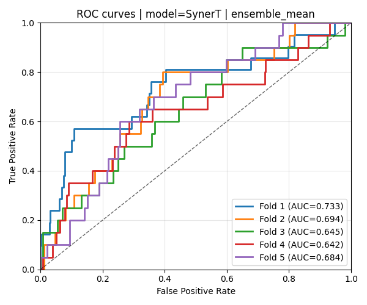
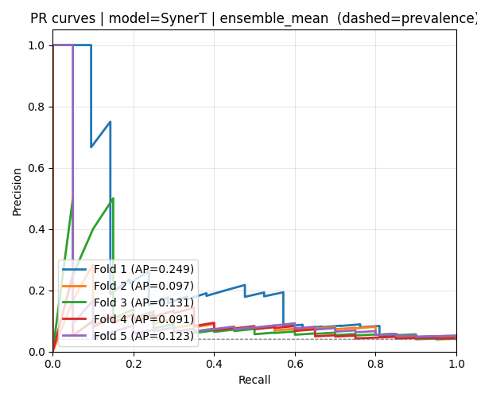
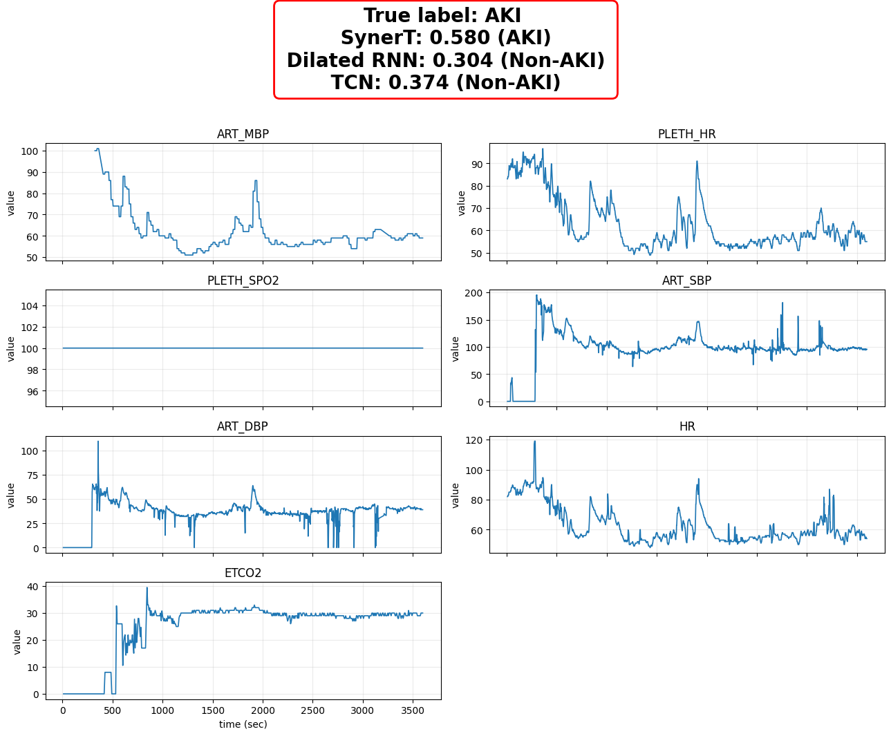
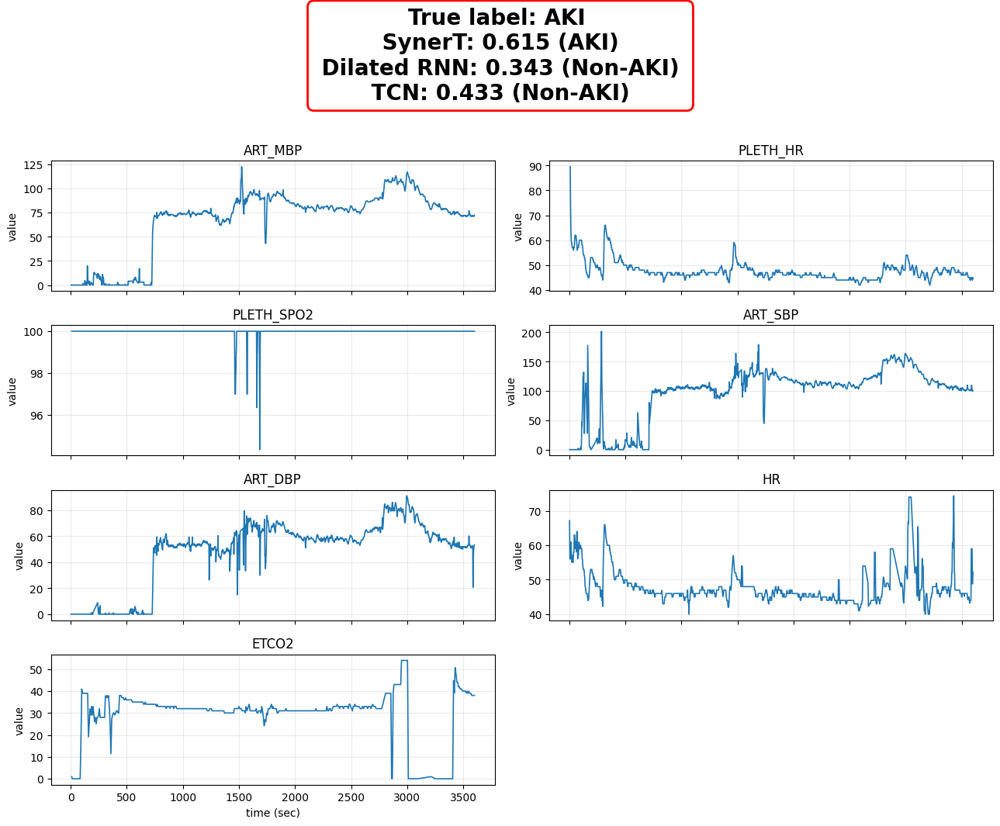
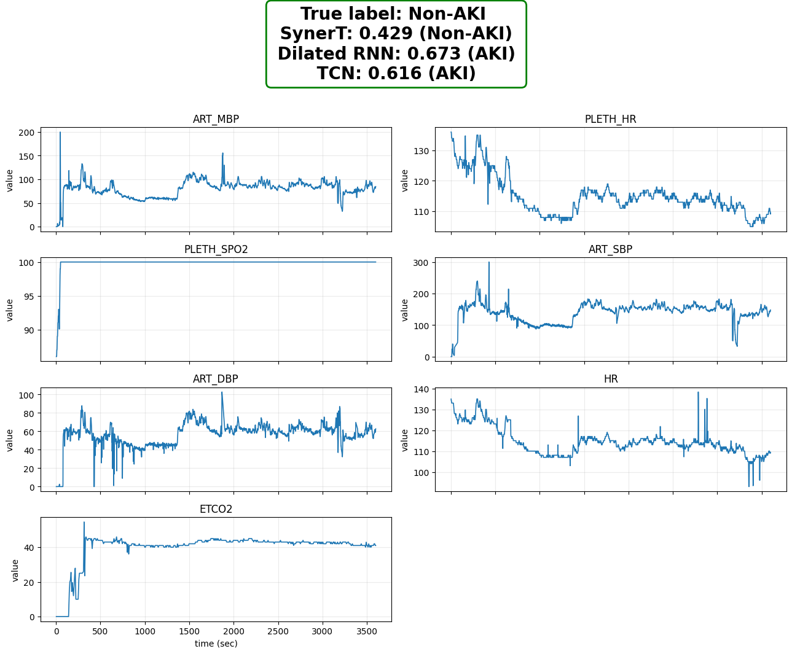
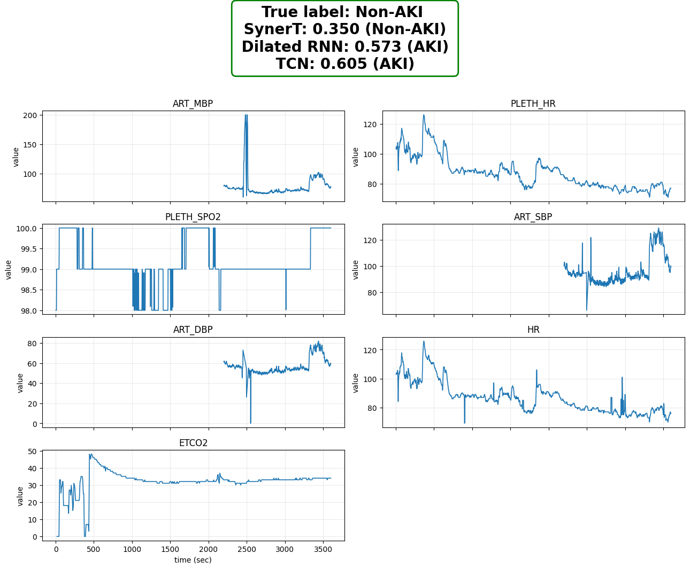

Physiological Trajectory Modeling for Early Prediction of Acute Kidney Injury During Surgery
SynerT — a synergistic temporal network that fuses multi-scale TCN and Dilated RNN branches
with temporal attention pooling to detect AKI risk from the first 60 minutes of intraoperative signals.
Quang-Minh NguyenTrong-Nghia Nguyen ✉Thuy-Quynh NguyenDuc-Minh LeNhat-Minh Nguyen Ho
Faculty of Data Science and Artificial Intelligence, National Economics University, Hanoi, Vietnam
✉ nghiant@neu.edu.vn
0.691
AUROC
± 0.053
0.145
AUPRC
Best · ± 0.082
p=0.024
Wilcoxon test
vs. Dilated RNN
60 min
Early prediction
window
Abstract
Overview
Abstract
Postoperative Acute Kidney Injury (AKI), a major factor contributing to increased hospitalisation
and mortality following major surgeries, presents a critical prediction challenge in perioperative
medicine. This paper presents SynerT (Temporal Synergy Network), an early warning
system that processes heterogeneous intraoperative time-series data to identify patients at high
risk of developing AKI prior to the onset of clinical manifestations. A multimodal temporal
architecture models physiological trajectories by combining multi-scale temporal dynamics through a
fusion-attention mechanism: a Multi-scale Temporal Convolutional Network (TCN) branch captures
high-frequency morphological features, while a Dilated Recurrent Neural Network (RNN) branch
captures long-range dependencies and state changes. Validated on the high-resolution VitalDB
database, SynerT achieves AUROC of 0.691 and AUPRC of 0.145
— the highest AUPRC among all evaluated models, with a statistically significant improvement
(p = 0.024) over the strongest baseline.
Physiological trajectory modeling: Framing intraoperative AKI prediction as a
trajectory modeling problem — explicitly tracking how multi-channel physiological signals evolve
jointly over time — rather than using static snapshots or single-channel summaries.
2
SynerT architecture: A synergistic dual-branch network combining TCN (short-term
morphological patterns) and Dilated RNN (long-range dependencies), unified through temporal
attention pooling that highlights the most informative physiological events per patient.
3
Early prediction validation: Demonstrated improved AUPRC and reduced false alarm
rates under a strict 60-minute observation window — the regime where actionable clinical decisions
can still prevent AKI progression.
Motivation
The AKI Prediction Challenge
Acute Kidney Injury is a sudden, reversible decline in kidney function that can develop within hours
during and after major surgery. Despite its gravity, it is frequently diagnosed too late — after
creatinine levels rise in blood tests ordered days post-operatively — leaving clinicians with
diminished capacity to intervene.
Scale of the problem: With approximately 300 million surgical procedures
worldwide each year, and AKI affecting roughly 1 in 5 surgical patients
(incidence ~18.4%), PO-AKI represents one of the most prevalent and costly postoperative
complications — yet one of the least detected in time to act.
The timing problem: Clinicians currently diagnose AKI using postoperative creatinine
measurements — a lagging indicator. By the time the diagnosis is made, the window for haemodynamic
intervention has often closed. An intraoperative early warning system using the first hour of
continuous signals could fundamentally change this.
Why existing models fall short: Most approaches use static preoperative risk scores
or process signals at a single temporal scale, capturing either brief haemodynamic events
(short-scale) or slow physiological trends (long-scale) — but not both simultaneously.
The operating room generates rich multi-channel, multi-scale dynamics that single-resolution
models systematically discard.
Insight behind SynerT: Surgical signals have a dual nature. Short-term
anomalies — sudden drops in blood pressure, transient oxygen desaturation — are best detected
by convolutional models. Long-term trends — progressive mean arterial pressure decline, slow
creatinine accumulation risk — are best tracked by recurrent models. Fusing both branches with
a temporal attention mechanism produces a model that sees the complete physiological picture.
Data
VitalDB Dataset & Preprocessing
All experiments use the VitalDB database — a high-resolution Korean surgical registry
that records continuous intraoperative physiological monitoring at 1-second granularity across multiple
channels. Cases are organised at the individual surgical encounter level.
Physiological Input Channels
Three channels are required for every case (minimum 60 observations within the
effective window). Four additional channels are incorporated when available:
Required
ART_MBP
Mean arterial blood pressure — primary perfusion indicator for kidney viability
Required
PLETH_HR
Heart rate from plethysmography — continuous cardiac output proxy
Required
PLETH_SPO2
Oxygen saturation — tissue oxygenation and perfusion adequacy
Optional
ART_SBP
Systolic blood pressure — peak pressure during cardiac contraction
AKI is defined using the established creatinine threshold criterion:
postoperative maximum creatinine ≥ 1.5× baseline (measured within 7 days
post-surgery), where baseline is the most recent creatinine within 30 days prior to surgery.
This follows standard KDIGO staging criteria.
Early prediction window: To prevent information leakage and simulate a realistic
intraoperative decision point, all model inputs are restricted to the first 60 minutes
from anesthesia start (or incision reference). The model must issue its risk prediction using only
the early intraoperative trajectory — the window in which clinical intervention is still possible.
Signals are resampled to a uniform 1 Hz grid and standardised using
fold-specific normalisation statistics (computed only from training data to prevent leakage).
Cases with fewer than 60 observations per required channel or shorter than 10 minutes of valid
data are excluded. Evaluation uses a stratified 5-fold cross-validation protocol
with 5 random seeds (yielding 25 paired observations per model comparison).
Model
SynerT Architecture

Figure 1. SynerT framework. Left: continuous physiological monitoring
(ART_MBP, PLETH_HR, PLETH_SPO2, ART_SBP, ETCO2) feeds into temporal preprocessing via
sliding window segmentation. Centre: dual-branch feature extraction — TCN blocks (Stage 1)
for short-term morphological patterns, Dilated RNN blocks (Stage 2) for long-range
dependencies — whose representations are fused in a shared feature space. Right: the fused
representation passes through fully-connected layers to produce P(AKI) ∈ [0, 1].
① Temporal Preprocessing
Resample all channels to uniform 1 Hz grid
Generate per-channel observation masks (valid time points)
Apply sliding window segmentation over the 60-minute window
Standardise using fold-level training statistics (no leakage)
Exclude cases: < 60 obs/required channel or < 10 min valid length
② TCN Branch — Local Patterns
Causal convolutions (no future leakage)
Dilated convolutions: receptive field seconds→minutes
Detects rapid signal fluctuations and brief events
Efficient computation without sequential bottleneck
Output: short-term feature representation
③ Dilated RNN Branch — Long Trends
Multi-resolution temporal connections
Mitigates vanishing gradient over long surgical sequences
Aggregates slow trends and cumulative state changes
Models gradual risk accumulation toward AKI onset
Output: long-range feature representation
④ Fusion + Attention Pooling
Concatenate TCN and Dilated RNN representations
Temporal attention: adaptive per-timestep weights
Highlights most informative physiological events
Suppresses noise from artefact-contaminated segments
Output: unified patient trajectory embedding
⑤ AKI Prediction Head
Fully-connected layers (FCN) with ReLU activations
Dropout regularisation for overfitting control
Sigmoid output: P(AKI | X) ∈ [0, 1]
Continuous risk score for real-time intraoperative display
Loss Function: Weighted Binary Cross-Entropy
To handle severe class imbalance (AKI patients are a small minority), SynerT uses
positive-class weighted BCE. The positive weight w⁺ is set dynamically per fold:
ℒ = − (1/|B|) Σi∈B [ w⁺ · yᵢ · log σ(zᵢ) + (1 − yᵢ) · log(1 − σ(zᵢ)) ]
w⁺ = Nneg / Npos (ratio of non-AKI to AKI cases in training fold) ·
σ = sigmoid · zᵢ = raw logit output
This formulation penalises false negatives more heavily, encouraging the model to correctly identify
rare AKI events rather than defaulting to predicting the majority (non-AKI) class. The loss is
optimised via mini-batch stochastic gradient descent using BCEWithLogitsLoss
(numerically stable logit-domain computation).
Experiments
Results on VitalDB
SynerT is compared against eight baseline models spanning classical RNNs, convolutional networks,
and attention-based architectures. Results are reported as mean ± standard deviation across 25
observations (5 random seeds × 5 cross-validation folds), using out-of-fold predictions aggregated
via stratified 5-fold cross-validation.
0.691
AUROC
± 0.053
0.145
AUPRC
± 0.082 — Best
↑ Statistically significant
0.015
ΔAUPRC (mean)
vs. Dilated RNN
p = 0.024 (Wilcoxon)
25
Paired obs.
5 seeds × 5 folds
Model
AUROC (mean ± std)
AUPRC (mean ± std)
BiLSTM
0.591 ± 0.068
0.109 ± 0.036
LSTM
0.593 ± 0.066
0.105 ± 0.032
MLP * ablation
0.639 ± 0.075
0.111 ± 0.066
WaveNet
0.670 ± 0.075
0.122 ± 0.066
TCN * ablation — SynerT branch
0.675 ± 0.074
0.121 ± 0.064
GRU
0.680 ± 0.067
0.116 ± 0.053
Dilated Conv
0.692 ± 0.055
0.117 ± 0.058
Dilated RNN * ablation — SynerT branch
0.700 ± 0.052
0.124 ± 0.055
★ SynerT (Ours)
0.691 ± 0.053
0.145 ± 0.082
* MLP, TCN, and Dilated RNN serve as single-component ablation variants of SynerT.
Bold indicates the best value per column. SynerT's AUPRC improvement over Dilated RNN
is statistically significant (paired Wilcoxon, p = 0.024).
Why AUPRC matters more than AUROC here: With severe class imbalance,
AUROC can be misleadingly optimistic — a model that simply learns to rank a few obvious
AKI cases above obvious non-AKI cases can score 0.70 while completely missing the hard cases.
Precision-Recall analysis directly measures how well the model identifies the rare positive
class (AKI), which is what clinicians need. SynerT achieves the highest AUPRC, confirming
its superior practical utility for reliable risk stratification.

(a) ROC Curves — Top Models. SynerT (0.691 ± 0.053) is competitive with the
best baselines. Dilated RNN achieves the highest AUROC (0.700 ± 0.052), but the difference
is not statistically significant.

(b) Precision-Recall Curves — Top Models. SynerT (0.145 ± 0.082) maintains
higher precision across a wider recall range. This advantage is most pronounced at clinically
relevant operating points where false alarms must be minimised.
Figure 2. Performance curves for all top-ranked models on VitalDB AKI prediction.
Curves represent ensemble means from out-of-fold predictions across 5 seeds × 5 folds.
SynerT Per-Fold Cross-Validation Performance
The following plots show SynerT's ROC and Precision-Recall curves per fold, illustrating
the variance across data partitions and the robustness of the model under different
patient cohort compositions.

(a) SynerT ROC per fold. Per-fold AUC ranges from 0.642 (Fold 4) to
0.733 (Fold 1), reflecting natural patient-population variation. The ensemble mean
(0.691) is representative of the cross-fold performance.

(b) SynerT PR per fold. Average Precision per fold spans 0.091–0.249.
Fold 1 (AP = 0.249) demonstrates particularly strong positive-class discrimination,
suggesting case-mix effects on minority-class prevalence.
Figure 3. SynerT fold-level performance. Dashed line in the PR plot
indicates dataset prevalence (the no-skill baseline for AUPRC).
Qualitative Analysis
Case-Level Physiological Trajectory Analysis
To understand where synergistic trajectory modeling adds value beyond sequence-only baselines,
four representative surgical cases are examined: two true AKI patients that SynerT correctly
identifies while single-branch baselines miss, and two non-AKI patients where SynerT avoids
false alarms triggered by the baselines.
Each case shows 7 physiological channels recorded over the surgery duration (~3,500 seconds
≈ 58 minutes) — the full observation window available to the model. The header box shows
SynerT's predicted probability versus Dilated RNN and TCN baselines.
True Positive Cases — AKI Correctly Detected
Case I — True AKI

Case II — True AKI

True Negative Cases — False Alarms Suppressed
These cases demonstrate SynerT's ability to recognise that isolated fluctuations in individual
channels do not constitute genuine AKI risk — reducing alarm fatigue that plagues single-scale models.
Case III — True Non-AKI

Case IV — True Non-AKI

Figure 4. Case-level comparison between SynerT and single-branch baselines
(Dilated RNN, TCN) on four representative VitalDB surgical cases.
Red header = AKI patient; green header = Non-AKI patient.
Seven monitored physiological channels are shown per case over the full 60-minute window.
The synergy effect: In every case above, it is the interaction between
channels and across time scales that encodes the clinically meaningful signal. A sudden ART_MBP
drop alone may be a drug effect; a sustained ART_MBP depression coupled with
progressive HR elevation and ETCO₂ plateau indicates genuine haemodynamic compromise.
SynerT's dual-branch + attention architecture is specifically designed to capture these
coordinated multi-channel, multi-scale patterns.
Statistical Validation
Hypothesis Testing Against Strongest Baseline
Beyond reported means, the clinical utility of SynerT's AUPRC improvement must be established
with formal statistical testing. The comparison targets Dilated RNN — the strongest single-branch
baseline and an ablation component of SynerT itself.
0.015
ΔAUPRC mean
0.012
ΔAUPRC median
p = 0.024
Wilcoxon p-value
Test design: A paired Wilcoxon signed-rank test (one-sided alternative:
SynerT > Dilated RNN) was applied on AUPRC results across all
25 paired observations (5 random seeds × 5 cross-validation folds).
AUPRC was chosen as the primary metric given the severe class imbalance.
The improvement is statistically significant at α = 0.05.
In contrast, the AUROC difference (SynerT 0.691 vs. Dilated RNN 0.700) is not
statistically significant — consistent with the observation that ROC curves largely overlap
across dilation-based architectures and do not discriminate well under severe class imbalance.
This reinforces the choice of AUPRC as the primary evaluation criterion for intraoperative
AKI prediction.
Conclusion
Summary and Future Directions
SynerT demonstrates that explicitly modeling physiological trajectories as multi-scale,
multi-channel time series — rather than treating each channel or time scale in isolation —
yields tangible improvements in early AKI risk stratification during surgery. The key advance
is the synergistic dual-branch architecture: TCN captures the morphological
transients that precede haemodynamic crises, Dilated RNN tracks the slow drift that reflects
cumulative renal stress, and temporal attention pooling selects the most informative moments
within the 60-minute early prediction window.
The statistically significant improvement in AUPRC (p = 0.024) over the strongest baseline
directly addresses the clinical requirement that matters most: fewer false alarms
without sacrificing sensitivity, enabling actionable intraoperative decision support
without contributing to alarm fatigue.
Limitations
Single-centre data: All experiments use the VitalDB Korean surgical cohort.
External validation on multi-centre, multi-demographic datasets is required to establish
generalisability across different surgical practices and patient populations.
Signal scope: SynerT uses a focused set of commonly monitored haemodynamic
signals. Clinically relevant modalities not yet incorporated — urine output trends,
intraoperative laboratory markers, anaesthetic depth indices — may provide complementary
predictive value.
Future Work
Planned extensions include: (1) external validation across multi-centre cohorts with diverse
surgical specialties; (2) integration of postoperative longitudinal data to extend the
prediction horizon beyond the intraoperative window; (3) extension to other perioperative
complications (sepsis, haemorrhage, cardiac events); (4) incorporation of uncertainty
quantification to provide calibrated confidence intervals alongside the risk score; and
(5) clinician feedback mechanisms to align model operating points with ward-specific
alert thresholds.
Clinical outlook: The 60-minute early prediction window is precisely where
anaesthesiologists can act — by adjusting fluid management, vasopressor dosing, or surgical
pace — before irreversible renal damage accumulates. A reliable, low-false-alarm early warning
system embedded in existing monitoring infrastructure could meaningfully reduce the incidence
and severity of postoperative AKI.